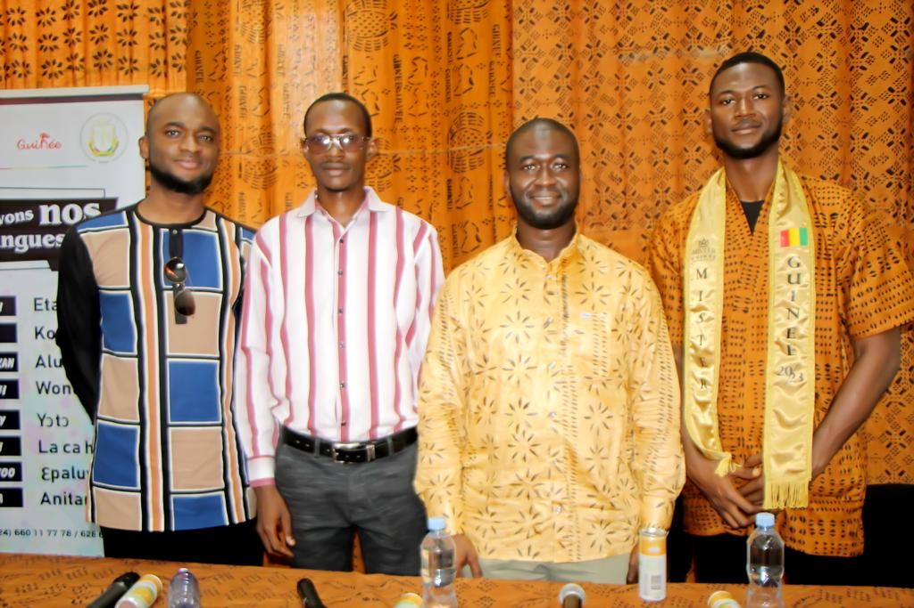

Notre Mission
L’IRLA œuvre à la recherche, la valorisation et la promotion des langues guinéennes dans tous les domaines de la vie nationale.
Promotion linguistique
Promouvoir les langues guinéennes dans tous les domaines de la science, de la technique et de la technologie.
Études culturelles
Mener des études sur les traditions linguistiques : contes, proverbes, légendes, maximes, dictons, etc., pour les analyser, vulgariser et archiver.
Coordination d'actions
Entreprendre et coordonner toutes les actions visant à promouvoir les langues nationales.
Recherche appliquée
Organiser des recherches linguistiques appliquées aux domaines de l’enseignement, de l’alphabétisation et des médias.
Étude des interférences
Mener des recherches sur l’interférence entre le français et les langues guinéennes pour améliorer leur enseignement mutuel.
Relance de l'enseignement
Réaliser les conditions nécessaires à la relance efficace de l’enseignement des langues nationales et en langues nationales.
Nos dernières actualités
Restez informé des moments forts de l’IRLA : événements, visites officielles, partenariats, concours et initiatives pour la valorisation des langues guinéennes. Retrouvez ici les temps forts récents qui illustrent notre engagement sur le terrain culturel, éducatif et scientifique.

Concours des écrivains en langues nationales
Grand prix IRLA (Dre Diaka SIDIBE) aux écrivains en langues nationales, aiguisez vos plumes, remplissez vos encriers et venez participez à la première édition du concours littéraire Dre. Diaka SIDIBE.
14 Mai 2025

Lancement de la Semaine des Langues Guinéennes
l’IRLA soutien les masters Guinée en les invitant à la cérémonie de lancement de la Semaine de langues guinéennes. Cette initiative montre l’importance accordée à la promotion et à la préservation des langues locales en Guinée
02 Mai 2025

Cooperation entre l’IRLA et le CREDEL
Partenariat de coopération inte-runiversitaire entre l’IRLA et le CREDEL, ainsi que sur la participation d’un directeur général à la cérémonie de lancement de la Semaine de la langue guinéenne.
30 Avril 2025

Visite du coordinateur du CELHTO-UA à IRLA
Visite de l’Union africaine à IRLA par M. Taulbo de soumettre un document du CELHTO.
19 Avril 2025
Evénements à venir
Découvrez les événements majeurs organisés ou soutenus par l’IRLA : conférences, séminaires, concours, formations et semaines culturelles. Ces rencontres sont des moments forts pour valoriser les langues nationales, renforcer les échanges scientifiques et culturels, et engager les communautés autour des enjeux linguistiques en Guinée.

Institut de Recherche Linguistique Appliquée (IRLA). En partenariat avec le Centre Culturel Franco Guinéen organise son 2ème mercredi Scientifique.
Date: 06 Mars 2024
Lieu: CCFG
Sous le Thème : L’importance des Langues
maternelles dans le développement socio-économique.
Université invitée : Université Général
Lansana CONTE de Sonfonia Conakry